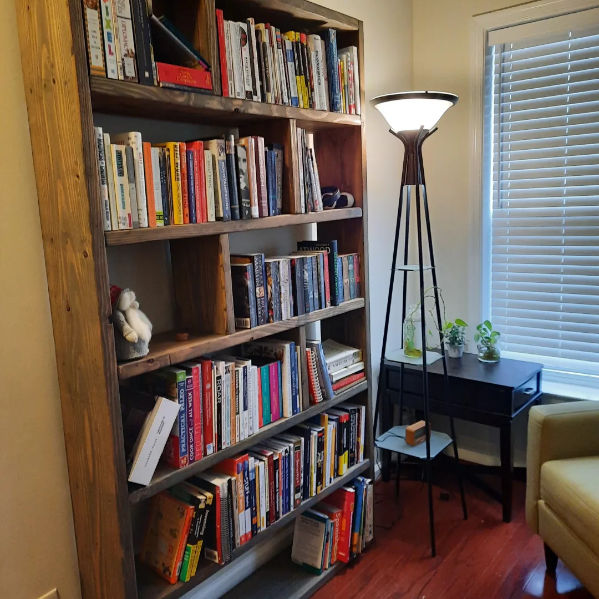

Favorite Books
I’m obsessed with books! Okay, that’s probably an understatement. Perhaps this will help prove my point. Some fellow bibliophiles might relate to my slightly unusual habit of spending ten or twenty minutes just studying the contents of a bookshelf. I’ll even take pictures so I can look up the titles later. I simply can’t help myself. Whenever I encounter a bookshelf overflowing with books, I feel an almost gravitational pull toward it, as though every cover exerts its own little force of attraction.
But I believe this fascination goes far beyond simply seeking novelty. At my core, I’m insatiably curious. My mind is constantly generating questions, practically minute by minute. Every book represents another opportunity to explore an unfamiliar idea, challenge what I think I know, or discover something I hadn’t even thought to question.

I became a voracious reader around the age of twelve, although my curiosity began long before that. Even in my earliest years, I couldn’t stop asking why. I recall one particularly amusing, yet humbling, moment during a Sunday school class at church when I asked, “If God is our Father, then who is His father?”
I wanted to understand the origins of God. What was His nature? What does it mean to be dead? What is the purpose of our existence? And perhaps most importantly, how could we possibly know the answers to any of these questions?
I was rarely satisfied with the answers I received from my teachers or scripture. While some provided useful moral constructs for navigating the complexities of human existence, they did little to satisfy my deeper questions about the nature of reality. So I began looking elsewhere, turning to more secular books on evolution, philosophy, psychology, and just about anything else that might offer another piece of the puzzle.
None of this is meant to disparage religion. Even today, I appreciate aspects of religion as a framework for moral reasoning, provided one’s interpretation doesn’t come at the expense of scientific inquiry or infringe upon the rights and freedoms of others. My point is simply that faith and curiosity need not be mutually exclusive. After all, some of history’s greatest religious thinkers, including Thomas Aquinas, devoted their lives to questioning the nature of God, existence, and reality itself. Aquinas understood that asking difficult questions wasn’t necessarily an abandonment of faith, but could instead be a means of deepening one’s understanding of it. Whether religious or not, I believe we should never stop questioning the things we think we know.
In fact, that’s something I appreciated about growing up Mormon: the encouragement, at least in my experience, to ask questions and seek answers for myself. Although I no longer consider myself religious, I still value that early encouragement to seek understanding. Today, I lean on the scientific method as my primary means of investigating the world, grounding my beliefs in evidence, reason, and a willingness to revise them when new information comes to light. Of course, science doesn’t necessarily answer every philosophical question about existence, meaning, or morality, but it provides a powerful framework for distinguishing what we know from what we merely believe. Looking back, I think that early desire to understand the world, rather than simply accept it as it was presented to me, helped shape the insatiable curiosity I still carry today.
And perhaps that brings me back to my obsession with books. I probably buy more than I’ll ever have time to finish, but that’s a problem I’m perfectly happy to live with, although I’m starting to run out of shelf and floor space. Below are some of my favorite books—some that have shaped how I think, work, and build, and others that have simply satisfied my curiosity, a seemingly bottomless ocean whose depths I’ve barely begun to explore.
Artificial Intelligence, Machine Learning & Data Science
The Master Algorithm
Pedro Domingos
LLMs in Production
Christopher Brousseau & Matt Sharp
Introduction to Data Mining
Pang-Ning Tan, Michael Steinbach, Vipin Kumar
Design and Analysis of Experiments
Douglas C. Montgomery
Software Engineering & Computer Science
The Pragmatic Programmer
David Thomas & Andrew Hunt
This one is a classic! I picked this up about 1-2 years into my career and found it to be a great resource for developing into a better software engineer.
The Secret Life of Programs
Jonathan E. Steinhart
****
Code
Charles Petzold
****
Computer Systems: A Programmer’s Perspective
Randal E. Bryant & David R. O’Hallaron
****
Linux Command Line and Shell Scripting Bible
Richard Blum & Christine Bresnahan
****
The C Programming Language
Brian W. Kernighan, Dennis MacAlistair Ritchie
Grokking Algorithms
Aditya Y. Bhargava
Systems Architecture, Cloud & DevOps
Designing Data-Intensive Applications
Martin Kleppmann
I started reading this book when I wanted to dive deeper into the world of big data several years ago. Kleppmann does a fantastic job explaining complex data systems in a practical and understandable way. It helped me see how databases, distributed systems, pipelines, and system architecture fit together. I especially appreciated how the book compares different design choices and explains the tradeoffs behind them, rather than simply describing them. Now that I’ve had several years of experience building data systems, I can better appreciate the insights and real-world applications presented in the book.
The DevOps Handbook
Gene Kim, Jez Humble, Patrick Debois, John Willis & Nicole Forsgren
****
The Phoenix Project
Gene Kim, Kevin Behr & George Spafford
****
Solutions Architect’s Handbook
Saurabh Shrivastava, Neelanjali Srivastav, Kamal Arora
Google Cloud Certified Professional Cloud Architect Study Guide
Dan Sullivan
Web Scalability for Startup Engineers
Artur Ejsmont
Engineering, Architecture & Design
Engineering in Plain Sight
Grady Hillhouse
Structures: Or Why Things Don’t Fall Down
James Edward Gordon
How Stuff Works
Marshall Brain, HowStuffWorks.com
A Biography of the Pixel
Alvy Ray Smith
The Color Bible
Laura Perryman
Psychology, Decision-Making & Personal Growth
Thinking, Fast and Slow
Daniel Kahneman
I enjoyed this book because it helped me better understand how people make decisions and how easily our thinking can be influenced by biases. I found the contrast between fast, intuitive thinking and slow, deliberate thinking especially useful. The book made me reflect more carefully on my own judgments and decision-making habits.
The Brain That Changes Itself
Norman Doidge
Grit: The Power of Passion and Perseverance
Angela Duckworth
****

The Daily Stoic
Ryan Holiday & Stephen Hanselman
Philosophy, History & Society
The Philosophy Book
Will Buckingham, DK Publishing
A People’s History of the United States
Howard Zinn, Kathy Emery, Ellen Reeves, Matt Damon, Howard Zinn
Business, Creativity & Communication
Inventing For Dummies
Pamela Riddle Bird
Storytelling with Data
Cole Nussbaumer Knaflic
Outdoors, Fitness & Human Performance
Mountaineering: The Freedom of the Hills
The Climbing Committee of the Mountaineers
Becoming a Supple Leopard
Kelly Starrett, Glen Cordoza